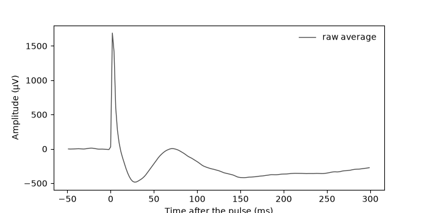
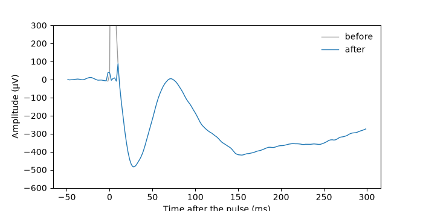
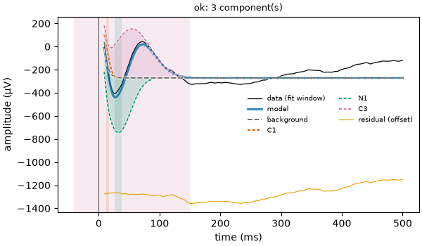
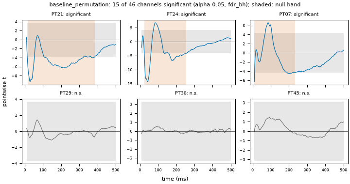

Note
Go to the end to download the full example code.
04: Real data, from start to end¶
Read a real recording, clean it, fit it, test it, and write the methods.
Introduction¶
The first three tutorials used made-up curves. Here we use a real recording, and do every step ourselves, in the order a study does them:
read the trials around each stimulation;
remove the artifact, the large electrical jump of the pulse itself;
re-reference, so that each electrode is compared with a good “zero”;
correct the baseline, so that each trial starts at zero;
check the trials, and flag the bad ones;
fit the average of each electrode;
test which electrodes really respond;
write the methods, the paragraph that tells readers what was done.
At the end, we see that one function, run_pipeline, does steps 2 to 7 at once with
the settings of the preset.
The data¶
The recording comes from the Utrecht CCEP dataset (van Blooijs et al., 2023; OpenNeuro ds004080, free to use, CC0). Patients with epilepsy had electrodes placed on the brain before surgery. Two neighbouring electrodes were given short electrical pulses, one every 5 seconds, and the other electrodes recorded the answer of the brain: a CCEP (cortico-cortical evoked potential). Its first bump, the N1, comes between 9 and 50 ms; a slower one, the N2, between 50 and 300 ms.
The dataset is stored in BIDS, a common way to arrange brain recordings in folders and tables. We read one patient, one run, and the 10 pulses given to the electrode pair PT13-PT14.
# Import what we need
import matplotlib.pyplot as plt
import numpy as np
import pandas as pd
import evoparam
from evoparam import plots, reports
from evoparam.artifact import remove_artifact
from evoparam.existence import test_response
from evoparam.io import read_bids
from evoparam.prep import baseline_correct, reject_trials, rereference
1. Reading the trials¶
read_bids finds the stimulation times in the events table of the dataset, and cuts
a piece of recording around each one: a trial (also called an epoch). With
remote=True, it reads straight from OpenNeuro, and only the few seconds it needs:
about 15 MB here, instead of the whole 2 GB file.
selectkeeps the pulses given to one electrode pair;pickskeeps the electrodes we want: here the 46 electrodes of the grid (PT01 to PT48), without the two that were stimulated (they carry a huge artifact and no usable response);epochis the piece kept around each pulse: from 1 s before to 1 s after.
# The stimulated pair, and the electrodes we keep
site = "PT13-PT14"
picks = [f"PT{number:02d}" for number in range(1, 49) if f"PT{number:02d}" not in site]
# Read the trials from OpenNeuro
trials = read_bids(
"ds004080",
"ccepAgeUMCU01",
session="1",
task="SPESclin",
run="021448",
remote=True,
select={"stim_site": site},
picks=picks,
epoch=(-1.0, 1.0),
)
print(trials)
<TrialSet | 10 trials × 46 channels × 1024 times, -1.000 – 0.998 s, 512 Hz, uV, human, spes>
trials is a TrialSet: 10 trials × 46 electrodes × 1024 time points, from −1 s to
+1 s, recorded 512 times per second (512 Hz), in µV. Time 0 is the pulse.
It also keeps a table with one row per trial (trials.metadata): when each pulse came,
where, and how strong. evoparam gives the columns the same names for every dataset
(stim_site, stim_current_mA…), whatever names the dataset used.
print(trials.metadata[["onset", "stim_site", "stim_current_mA"]].head(3))
onset stim_site stim_current_mA
0 4015.720703 PT13-PT14 7.0
1 4020.720703 PT13-PT14 7.0
2 4025.720703 PT13-PT14 7.0
Here is the average of the 10 trials on electrode PT21, before any cleaning. We look from −50 to +300 ms.
def show_average(ts, channel, ax, label, color, start=-50, stop=300):
"""Draw the average of the trials of one electrode, in thin lines with a white edge."""
times = ts.times * 1000
keep = (times >= start) & (times <= stop)
curve = ts.data[:, ts.ch_names.index(channel)].mean(axis=0)
ax.plot(times[keep], curve[keep], color="white", linewidth=2.2)
ax.plot(times[keep], curve[keep], color=color, linewidth=1.0, label=label)
ax.set_xlabel("Time after the pulse (ms)")
ax.set_ylabel("Amplitude (µV)")
fig, ax = plt.subplots(figsize=(7, 3.5))
show_average(trials, "PT21", ax, "raw average", "0.3")
ax.legend(frameon=False)

<matplotlib.legend.Legend object at 0x7f20106da850>
The very high and narrow peak at 0 ms is the artifact: the electrical pulse itself, picked up by the electrode. It is much larger than the brain response. Right after it, the curve dips down to about −480 µV near 28 ms: that is the N1 we want to measure. Then comes a slower dip after 100 ms, the N2.
2. Removing the artifact¶
remove_artifact takes the pulse out of every trial. With method="template", it
builds the typical shape of the artifact (the template: here the median of the 10
trials), scales it to each trial and electrode, and subtracts it, in a short window
around the pulse (window, from −2 to +8 ms).
After the pulse, the recording equipment takes a few ms to settle: a slow tail that
fades away. tail="joint" leaves this tail to the fit, which models it as the
background (tutorial 01), together with the bumps.
The baseline is a piece of the trial before the pulse, with no response in it: here
from −500 to −20 ms. It tells the method what “no artifact” looks like.
# Take the artifact out of every trial
cleaned = remove_artifact(
trials,
method="template",
window=(-0.002, 0.008),
tail="joint",
baseline=(-0.5, -0.02),
random_state=0,
)
# One score per trial, from 0 (bad) to 1 (good)
print(np.round(cleaned.quality, 2))
[0.62 0.62 0.61 0.62 0.62 0.62 0.62 0.62 0.61 0.62]
cleaned holds the cleaned trials (cleaned.cleaned) and a quality score for
each trial: how well the artifact was removed, from 0 (badly) to 1 (very well).
The figure compares the average before and after.
fig, ax = plt.subplots(figsize=(7, 3.5))
show_average(trials, "PT21", ax, "before", "0.6")
show_average(cleaned.cleaned, "PT21", ax, "after", "C0")
ax.set_ylim(-600, 300)
ax.legend(frameon=False)

<matplotlib.legend.Legend object at 0x7f201072b390>
The jump at 0 ms is gone: only small wiggles are left in the first 8 ms, where the samples of the window were replaced. Outside the window the two curves are the same (the grey one is hidden under the blue one), and the N1 near 28 ms is untouched.
Note
The window ends at 8 ms, 1 ms before the fit starts (9 ms): the artifact removal never touches the part of the curve that we measure.
3. Re-referencing¶
A voltage is always measured between two points: the electrode and a reference. If the reference picks up activity, every electrode gets it too. Re-referencing changes the reference after the recording.
A common choice is the common average: subtract, at each time point, the mean of
all electrodes. But the electrodes that respond would then put their response into
that mean, and into every other electrode. "car_adaptive" (adjusted common average)
first finds the electrodes with no response in 10-300 ms, and averages only those.
referenced = rereference(cleaned.cleaned, "car_adaptive", random_state=0)
# The electrodes used for the average (no response)
print(referenced.provenance.steps[-1]["settings"]["members"])
['PT01', 'PT02', 'PT03', 'PT05', 'PT06', 'PT09', 'PT10', 'PT11', 'PT17', 'PT18', 'PT19', 'PT20', 'PT25', 'PT26', 'PT27', 'PT28', 'PT29', 'PT30', 'PT31', 'PT32', 'PT33', 'PT34', 'PT35', 'PT36', 'PT37', 'PT38', 'PT39', 'PT40', 'PT41', 'PT42', 'PT45', 'PT46', 'PT47', 'PT48']
34 of the 46 electrodes were judged quiet and used for the average; the 12 others were left out of it (each one still gets the average subtracted).
4. Correcting the baseline¶
Each trial starts at its own level: the brain’s slow waves move it up or down. We subtract, from each trial and electrode, its mean over the baseline (−500 to −20 ms). All trials then sit around zero before the pulse, and the average is not pulled up or down by a few of them.
ready = baseline_correct(referenced, (-0.5, -0.02))
5. Checking the trials¶
A trial can be bad: the patient moved, an electrode came loose, the artifact was
badly removed. reject_trials looks for trials that are much larger, much noisier or
flatter than the others, or that have a low artifact quality score.
It looks at each trial on each electrode. A trial that is odd on one electrode only is masked on that electrode: the average of that electrode leaves it out. A trial that is odd on half of the electrodes or more is rejected everywhere.
It never deletes anything: it adds columns to metadata: rejected (True or
False), reject_reason and n_flagged_channels (on how many electrodes the trial
was masked).
checked = reject_trials(ready, baseline=(-0.5, -0.02))
print(checked.metadata[["rejected", "n_flagged_channels"]])
rejected n_flagged_channels
0 False 0
1 False 0
2 False 12
3 False 2
4 False 0
5 False 0
6 False 3
7 False 9
8 False 2
9 False 0
No trial is rejected, but a few trials are masked on some electrodes: trial 2 on 12 electrodes, trial 7 on 9. On PT21, for example, the average now uses 9 trials out of 10. Masking changes the averages a little, and so the numbers of the fit.
6. Fitting each electrode¶
evoparam.fit averages the trials of each electrode, then fits the average, as
fit_response did in the earlier tutorials, with the settings of the preset. It gives
back a GroupFit: one fit per electrode.
group = evoparam.fit(checked, "ccep", random_state=0)
# One row per bump, for all the electrodes
table = group.to_dataframe()
n1 = table[table["label"] == "N1"]
print(n1[["channel", "latency", "amplitude"]].round(3).to_string(index=False))
channel latency amplitude
PT05 0.041 -289.237
PT07 0.037 -389.543
PT15 0.026 -272.401
PT18 0.031 -129.254
PT21 0.032 -475.350
PT22 0.022 -143.976
PT23 0.037 -122.605
PT24 0.034 -1714.117
PT26 0.049 -111.998
PT30 0.027 -129.782
PT32 0.033 -151.704
PT34 0.049 -195.135
PT42 0.038 -156.584
PT43 0.024 -30.752
14 electrodes have an N1. The latency is in seconds (0.032 s = 32 ms) and the amplitude in µV. On PT21, the N1 comes at 32 ms with −475 µV.
The amplitude of a bump is measured from the background, not from zero, so it is not exactly the lowest point of the curve.
group.get("PT03") gives the fit of one electrode, which can be read and drawn like
the fits of the earlier tutorials.
fit = group.get("PT21")
fig = plots.plot_fit(fit)

Note
PT24 has an N1 of −1714 µV, much larger than the others. Such a value is worth a
look (plots.plot_fit(group.get("PT24"))) before you trust it: close to the
stimulated pair, what is left of the artifact and its tail can add to a bump.
7. Testing which electrodes respond¶
A fit always finds something, even in pure noise. To decide if an electrode really
responds, test_response asks: is the curve after the pulse (9-500 ms) larger than
what the noise alone would give?
The noise alone is made by sign flips: each trial is randomly turned upside down or not, many times (1000 here). A real response, the same at every trial, cancels out when half of the trials are flipped; noise does not change. If the real curve is larger than almost all the flipped ones, the electrode responds.
The answer is a p-value: the chance of a curve this large from noise alone. Small
is good. Since we test 46 electrodes, some would pass by luck; the p-values are
corrected for this (correction="fdr_bh", the default), and an electrode responds
when its corrected p-value is below 0.05.
The test is run on all the trials (ready, before the masks of step 5), as
run_pipeline does below.
test = test_response(ready, window=(0.009, 0.5), baseline=(-0.5, -0.02), by=(), random_state=0)
answer = pd.DataFrame(
{
"channel": test.settings["channels"],
"p_value": np.ravel(test.p_value),
"responds": np.ravel(test.significant),
}
)
print(answer.round(3).to_string(index=False))
channel p_value responds
PT01 0.386 False
PT02 0.054 False
PT03 0.054 False
PT04 0.016 True
PT05 0.016 True
PT06 0.039 True
PT07 0.039 True
PT08 0.016 True
PT09 0.140 False
PT10 0.208 False
PT11 0.039 True
PT12 0.016 True
PT15 0.016 True
PT16 0.017 True
PT17 0.080 False
PT18 0.208 False
PT19 0.566 False
PT20 0.017 True
PT21 0.017 True
PT22 0.018 True
PT23 0.028 True
PT24 0.016 True
PT25 0.090 False
PT26 0.189 False
PT27 0.370 False
PT28 0.230 False
PT29 0.801 False
PT30 0.370 False
PT31 0.090 False
PT32 0.132 False
PT33 0.801 False
PT34 0.040 True
PT35 0.140 False
PT36 0.998 False
PT37 0.393 False
PT38 0.071 False
PT39 0.162 False
PT40 0.255 False
PT41 0.663 False
PT42 0.158 False
PT43 0.156 False
PT44 0.310 False
PT45 0.801 False
PT46 0.355 False
PT47 0.393 False
PT48 0.094 False
15 of the 46 electrodes respond. The test and the fit answer two different questions, so they do not always agree:
8 electrodes respond and have an N1 (PT05, PT07, PT15, PT21, PT22, PT23, PT24, PT34);
7 respond without an N1 (PT04, PT06, PT08, PT11, PT12, PT16, PT20): their response is later, or its dip in 9-50 ms is not deep enough;
6 have an N1 but do not pass the test (PT18, PT26, PT30, PT32, PT42, PT43): a dip is there in the average, but it does not stand out enough from trial to trial.
Most studies keep the N1 of an electrode only when the electrode also passes the test.
The figure shows, for each electrode, the test statistic over time (a measure of how far the curve is from zero, compared with its spread over trials) and the band where noise alone stays.
fig = plots.plot_existence(test, channels=["PT21", "PT24", "PT07", "PT29", "PT36", "PT45"])

All the steps at once¶
Steps 2 to 7 are the chain of the "ccep" preset, with its own settings: same
artifact window, same reference, same baseline, same test. reports.run_pipeline
runs this chain in one call, from the raw trials.
result = reports.run_pipeline(trials, "ccep", random_state=0, trial_fits=False)
table_all = result.group.to_dataframe()
print(table_all[table_all["label"] == "N1"][["channel", "latency", "amplitude"]].round(3))
channel latency amplitude
8 PT05 0.032 -145.720
11 PT06 0.017 -128.931
15 PT07 0.037 -389.543
20 PT08 0.035 -1112.413
32 PT15 0.026 -272.401
43 PT18 0.031 -129.254
47 PT21 0.028 -354.120
55 PT23 0.037 -122.605
58 PT24 0.038 -918.300
64 PT26 0.049 -111.998
69 PT30 0.027 -129.782
71 PT31 0.032 -97.376
74 PT32 0.033 -151.704
78 PT34 0.049 -195.135
79 PT35 0.048 -118.772
88 PT42 0.038 -156.584
90 PT43 0.024 -28.895
run_pipeline does not mask any trial (step 5 is not part of the preset’s chain), so
its averages use all 10 trials, and its numbers are those of steps 2-4 and 6 without the
masks. It finds 17 N1 instead of 14, and on PT21 the N1 comes at 28 ms with −354 µV,
instead of 32 ms and −475 µV. With only 10 trials, leaving one out is enough to move a
bump: this is why every choice of cleaning goes in the methods.
Doing the steps one by one is useful to look at each of them; run_pipeline is
shorter, and it is sure to use the preset’s settings everywhere.
trial_fits=False skips the fit of each single trial, which the preset does too but
which takes longer.
8. The methods paragraph¶
Every step above wrote down what it did, with all its settings. reports.methods_text
turns this into the paragraph of the “Methods” section of a paper: what was done, in
what order, with which values, and what to cite.
print(reports.methods_text(result.results))
Evoked responses were analysed with evoparam (version 0.1.0.dev0) using the preset 'ccep' v1.2; validation: ds004080 (REQ-113, REQ-114, REQ-135). The stimulation artifact was removed by template subtraction (evoparam.artifact.remove_artifact, method 'template') in the window -2 to 8 ms (global template; templates grouped by the metadata columns stim_site, stim_current_mA and stim_polarity (those present); scaled to each trial and channel; recovery tail left to the response model and fitted jointly with its background). A quality score between 0 and 1 was computed for every trial. Channels were re-referenced to an adjusted common average from which channels with a response were excluded (responses judged in 10 to 300 ms). Each trial and channel was baseline-corrected by subtracting the mean of -500 to -20 ms of its own trial. Trials were averaged per channel (mean). In the window 9 to 500 ms, each waveform was modelled as an exponential background plus up to 6 components (skewed gaussian and gaussian; full width at half maximum 3 to 250 ms, both polarities). Amplitudes and background coefficients were solved by variable projection and the other parameters by bounded least squares (linear loss, 3 starts). Components were added one at a time and kept when the BIC decreased by at least 10, computed on residuals whitened by an autoregressive model of the noise of the plus-minus average of the trials (alternating signs, whole epoch). A final model holding two overlapping components of opposite sign was refitted from starts on the extrema of the data and replaced when the refit was better; a component of the refitted model that no longer lowered the criterion by the same amount was removed. Uncertainty: Jacobian-based (Wald) intervals at 95 %. Onset and offset are the times where a component reaches 10 % of its peak amplitude. Components were labelled by latency window: N1 (9 to 50 ms, negative), N2 (50 to 300 ms, negative) and delayed (100 to 1000 ms, either polarity). A response was said to have an N1 when the fitted curve (background and components) had a negative peak in 9 to 50 ms deeper than 3.4 times the noise standard deviation estimated by the fit. Classical measures (peak, mean amplitude, area and fractional-area latencies) were computed on the same window. The presence of a response in 9 to 500 ms was tested on every channel with a sign-flip permutation test of the trials (max_t statistic, 1000 permutations) against the baseline -500 to -20 ms (both polarities, alpha = 0.05, Benjamini-Hochberg false-discovery-rate correction across channels). Random draws used the seed 0; the result can be regenerated from its recorded provenance with evoparam.reproduce. Software: Bellec Y.V. evoparam: parameterizing evoked neural responses (version 0.1.0). https://github.com/yannbellec/evoparam Methods: Benjamini and Hochberg (1995) for the false-discovery-rate correction.
Read it and adapt it to your paper, but do not change the numbers: they are the ones
that were used. The last sentence says how to make the same result again
(evoparam.reproduce), from the record that each result keeps.
Note
Try it yourself: change site to another pair of the same run (look at
trials.metadata without select to see them), or keep other electrodes in
picks. Each time, compare the electrodes with an N1 and the ones that pass the
test.
Conclusion¶
A real analysis goes: read the trials (read_bids), remove the artifact
(remove_artifact), re-reference (rereference), correct the baseline
(baseline_correct), flag bad trials (reject_trials), fit each electrode
(evoparam.fit), test which ones respond (test_response) and write the methods
(reports.methods_text). reports.run_pipeline does the steps of the preset in one
call. Look at the figures at each step: a number is only as good as the curve under it.
Data: van Blooijs D, van den Boom MA, van der Aar JF, et al. Developmental trajectory of transmission speed in the human brain. Nature Neuroscience 26, 689-700 (2023). OpenNeuro ds004080, CC0.
Total running time of the script: (1 minutes 40.162 seconds)